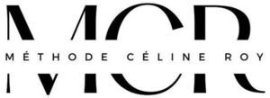

Trade Mark Journal No.2026/001 2 January 2026
WO0000001880552 (9,25,28,41,42,43,44)
Office of origin: European Union Intellectual Property Office (EUIPO)
Date of International Registration:8 August 2025
Date of designation in the UK:
8 August 2025

International priority date claimed: 13 February 2025
(European Union Intellectual Property Office (EUIPO))
- Class 9
- Digital electronic media, namely downloadable audio and video recordings featuring physical fitness programs, physical exercise, yoga, meditation, Pilates, health, wellbeing, nutrition and dietetic courses; video and audio recordings in connection with the use of exercise equipment and with physical education; downloadable mobile applications (software).
- Class 25
- Clothing; footwear; headwear; socks; slippers ("chaussons"); sports shoes; underwear.
- Class 28
- Sporting articles; balls for sports; sports balls; sports rings; sports equipment; gloves for sports; gymnastic and sporting articles; sporting equipment and sporting articles; weights armbands [sports articles]; weighted arm bands [sports articles]; weighted belts [sports articles]; sports and physical exercise equipment; weighted vests [sports articles]; waist trimmer exercise belts [sports articles]; bags adapted for use with sporting equipment; exercise equipment for pilates; pilates balls and small balls for firming and stretching exercises; pilates balls for firming and stretching exercises; pilates swings, boards, rollers and bands; fitness apparatus; fitness and pilates apparatus and machines; elastic bands for fitness purposes.
- Class 41
- Sports courses; education and training services in the field of sports; sports and fitness instruction services; information services with respect to sports; production and provision of entertainment, particularly via video podcasts and educational sound and video recordings in the field of sports and fitness; providing information about exercise and fitness via a website; individualized coaching in the field of sports, including physical preparation and instruction; advice with respect to physical preparation and fitness; yoga courses and instruction, including yoga training and coaching; physical fitness training services in the field of yoga; providing online non-downloadable videos for teaching yoga; meditation courses and training; pilates courses and training, including coaching and physical training services; training services with respect to beauty, body care and relaxation services; holistic wellness training services including advice with respect to body care, nutrition and wellness; education services with respect to wellness and body hygiene, including practical workshops; training in nutrition and dietetics, including online workshops; pilates courses and training sessions, including Reformer Pilates coaching and physical training services.
- Class 42
- Design and development of mobile applications for tracking wellness, nutrition, dietetic food, physical fitness, and stress management and relaxation.
- Class 43
- Restaurant (food) services; meal preparation and provision services, including for balanced meals and meals adapted to nutritional needs; dietetic catering services; catering services in connection with wellness and nutrition; cafe and restaurant services offering menus in keeping with a healthy lifestyle; accommodation services, particularly for wellness or relaxation stays; providing accommodation for wellness and health retreats.
- Class 44
- Beauty and health care services; massage services; holistic therapy services; consultation services with respect to body wellness and health; consultation services with respect to nutrition; consultation services with respect to mental health, weight and stress management; consultation services with respect to women's health, particularly for the perimenopause and menopause; exercise therapy services; consultation services with respect to fitness; beauty care services; dietary services in nutrition; consultation services with respect to food and nutrition; advice in connection with dietetics and nutrition; provision of dietetic information regarding food and feeding.
Céline NEUVILLE
Representative: Wynne-Jones IP Limited, Southgate House, Southgate Street Gloucestershire GL1 1UB UNITED KINGDOM